PROJECT 04 / INTERNET OF THINGS
Sistem pengamanan dan pengendalian akses pintu berbasis Wemos D1 Mini (ESP8266), RFID, dan Internet of Things (IoT), dengan pemantauan serta kendali melalui perangkat mobile.
← Kembali ke Portfolio01
Smart Door Lock merupakan sistem pengamanan pintu berbasis Wemos D1 Mini (ESP8266), RFID, dan Internet of Things (IoT) yang dirancang untuk mengatur serta mengendalikan akses ruangan berdasarkan identitas pengguna.
Sistem mengintegrasikan pembacaan kartu RFID, kendali pintu melalui aplikasi Blynk, dan push button sebagai pilihan pengoperasian. Sensor getaran digunakan untuk mendeteksi gangguan pada pintu, sehingga sistem dapat membantu memberikan peringatan dini terhadap potensi upaya pembobolan.
Dengan integrasi teknologi IoT, pengguna dapat mengelola dan mengawasi akses ruangan secara real-time melalui perangkat mobile. Sistem ini dikembangkan untuk mendukung pengamanan ruang administrasi serta meningkatkan kemudahan dan kenyamanan dalam pengelolaan akses pintu.
02
Pengembangan Smart Door Lock bertujuan menyediakan sistem pengamanan pintu yang terintegrasi dengan teknologi Internet of Things (IoT), sehingga pengguna dapat mengelola dan mengawasi akses ruangan secara real-time melalui perangkat mobile.
Sistem dirancang untuk meningkatkan keamanan, mencegah akses ilegal, memberikan notifikasi dini terhadap upaya pembobolan, serta meningkatkan efisiensi dan kenyamanan dalam pengelolaan keamanan ruang administrasi secara berkelanjutan.
Mengembangkan sistem pengamanan pintu yang terintegrasi dengan teknologi Internet of Things untuk mendukung pengelolaan dan pengawasan akses ruangan melalui perangkat mobile.
Mengatur dan mengendalikan akses pintu berdasarkan identitas pengguna serta menyediakan kendali melalui aplikasi Blynk dan push button.
Mendukung pemantauan akses ruangan secara real-time dan memberikan notifikasi dini ketika sensor getaran mendeteksi gangguan pada pintu.
Meningkatkan efisiensi dan kenyamanan pengelolaan keamanan ruang administrasi melalui sistem pengendalian akses yang terintegrasi.
03
Smart Door Lock dirancang menggunakan Wemos D1 Mini (ESP8266) sebagai pusat pengendalian sistem. Sistem mengintegrasikan RFID sebagai identifikasi pengguna, aplikasi Blynk untuk kendali melalui perangkat mobile, serta push button sebagai kendali langsung pada perangkat.
Sistem juga dilengkapi sensor getaran untuk mendeteksi gangguan pada pintu. Ketika akses diberikan melalui mekanisme yang tersedia, pengendali mengatur aktuator kunci pintu. Integrasi IoT mendukung pemantauan dan pengelolaan akses ruangan.
Berfungsi sebagai mikrokontroler utama yang memproses masukan dari perangkat identifikasi dan sensor, serta mengatur kendali sistem penguncian pintu.
Digunakan untuk membaca kartu RFID sebagai identitas pengguna. Data identifikasi diproses oleh pengendali untuk mengatur pemberian akses pintu sesuai rancangan sistem.
Solenoid berfungsi sebagai aktuator pengunci pintu, sedangkan relay digunakan untuk mengendalikan aktuator berdasarkan perintah dari sistem.
Digunakan sebagai antarmuka IoT untuk mengendalikan akses pintu melalui perangkat mobile dan mendukung pemantauan sistem secara real-time.
Menyediakan pilihan kendali langsung untuk membuka pintu sebagai bagian dari mekanisme pengoperasian sistem.
Digunakan untuk mendeteksi getaran atau gangguan pada pintu. Deteksi sensor menjadi masukan bagi sistem untuk mendukung pemberian notifikasi dini.
04
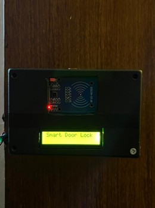
Dokumentasi perangkat Smart Door Lock yang mengintegrasikan mikrokontroler, RFID, aktuator kunci, sensor getaran, dan kendali IoT.
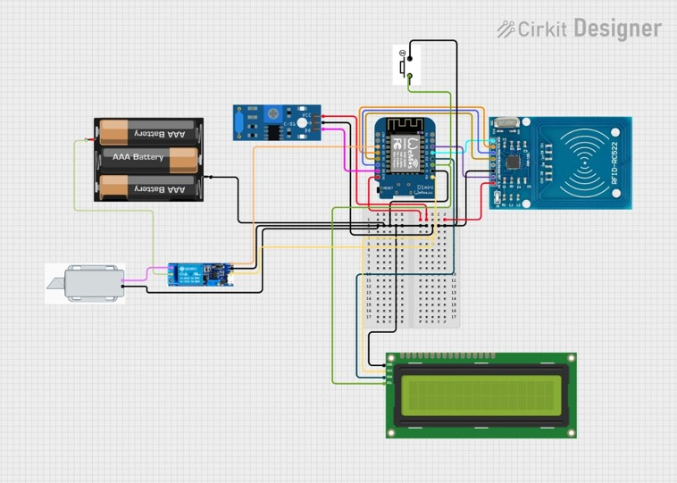
Diagram rangkaian yang memperlihatkan hubungan Wemos D1 Mini dengan modul RFID, sensor getaran, kendali aktuator, dan komponen pendukung.
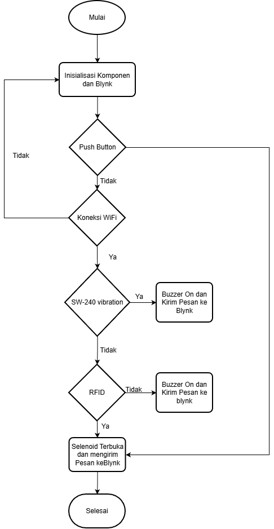
Diagram alur proses sistem mulai dari inisialisasi, pembacaan identitas RFID dan masukan kendali, hingga pengaturan akses pintu serta deteksi gangguan.
05
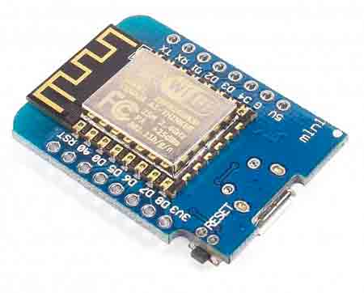
Mikrokontroler utama yang memproses masukan dari sensor dan mengendalikan sistem Smart Door Lock serta koneksi IoT.
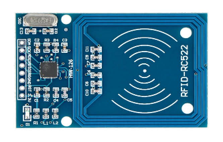
Digunakan untuk membaca kartu RFID sebagai identitas pengguna dalam proses pengendalian akses pintu.
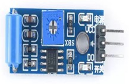
Mendeteksi getaran atau gangguan pada pintu sebagai masukan untuk sistem peringatan.
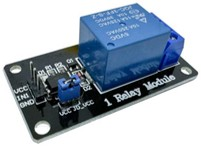
Berfungsi sebagai sakelar kendali untuk mengatur aktuator kunci pintu berdasarkan perintah dari sistem.
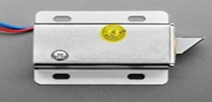
Aktuator pengunci pintu yang dikendalikan melalui relay untuk mengatur akses masuk sesuai perintah sistem.
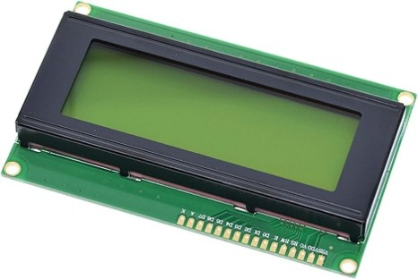
Digunakan sebagai tampilan informasi sistem Smart Door Lock.
06
Program Smart Door Lock diimplementasikan pada Wemos D1 Mini (ESP8266) untuk memproses masukan dari modul RFID dan sensor getaran, serta mengendalikan akses pintu. Sistem juga terintegrasi dengan aplikasi Blynk untuk mendukung kendali pintu dan pemantauan melalui perangkat mobile.
Pengendalian akses dilakukan melalui pembacaan kartu RFID, aplikasi Blynk, dan push button. Program mengatur respons sistem terhadap masukan tersebut serta menggunakan sensor getaran untuk mendeteksi gangguan pada pintu sesuai perancangan.
Program menerima data dari modul RFID dan memproses identitas kartu untuk menentukan pemberian akses pintu sesuai rancangan sistem.
Program mengatur perintah pembukaan pintu melalui aplikasi Blynk dan push button, serta mengendalikan aktuator kunci melalui relay.
Program membaca masukan sensor getaran SW-420 untuk mendeteksi gangguan pada pintu dan mendukung pemberian notifikasi dini.
Program mengintegrasikan perangkat dengan aplikasi Blynk untuk mendukung pengendalian akses dan pemantauan sistem melalui perangkat mobile.
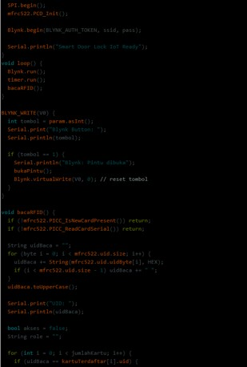
Dokumentasi program pengendalian akses pintu berbasis Wemos D1 Mini (ESP8266) dengan integrasi RFID, sensor getaran, dan Blynk.
07
Pengujian dilakukan dengan menggunakan kartu RFID yang terdaftar dan tidak terdaftar untuk mengamati respons sistem dalam membaca identitas pengguna dan mengatur pemberian akses pintu.
Pengujian dilakukan dengan memberikan perintah pembukaan pintu melalui aplikasi Blynk dan push button. Respons sistem diamati untuk mengetahui apakah kendali pintu berjalan sesuai perancangan.
Pengujian dilakukan dengan memberikan gangguan berupa getaran pada pintu dan mengamati respons sensor SW-420 serta notifikasi yang dihasilkan oleh sistem.
Evaluasi dilakukan untuk mengetahui tanggapan pengguna terhadap kemudahan penggunaan dan manfaat Smart Door Lock dalam mendukung keamanan serta pengendalian akses pintu.
08
Berdasarkan hasil pengujian fungsional, sistem Smart Door Lock dapat membaca kartu RFID dengan akurat, membuka pintu melalui aplikasi Blynk dan push button secara normal, serta mendeteksi gangguan pintu menggunakan sensor getaran sesuai dengan perancangan.
Evaluasi kepuasan pengguna menunjukkan bahwa alat mudah digunakan dan bermanfaat, terutama dalam mendukung keamanan serta pengendalian akses pintu.
Hasil pengujian menunjukkan bahwa sistem dapat membaca kartu RFID dan mengatur akses berdasarkan identitas pengguna. Dokumentasi percobaan mencakup penggunaan kartu terdaftar dan tidak terdaftar.
Pintu dapat dikendalikan melalui aplikasi Blynk dan push button secara normal. Sistem juga dapat mendeteksi gangguan pintu menggunakan sensor getaran sesuai perancangan.
Hasil evaluasi menunjukkan bahwa alat mudah digunakan dan bermanfaat, terutama untuk meningkatkan keamanan dan pengendalian akses pintu.
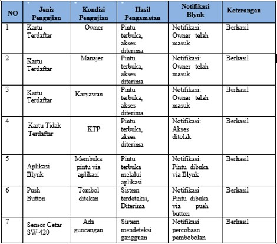
Dokumentasi tabel hasil pengujian sistem Smart Door Lock.
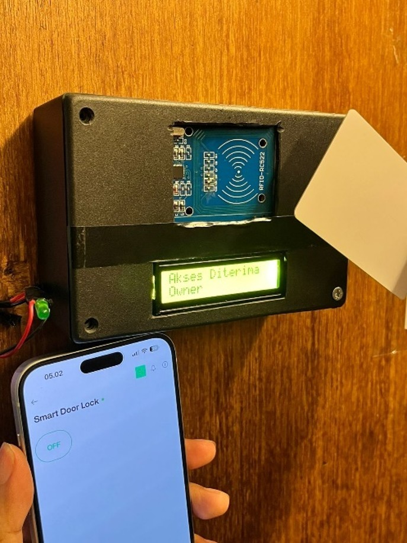
Dokumentasi percobaan akses pintu menggunakan kartu RFID yang terdaftar pada sistem.
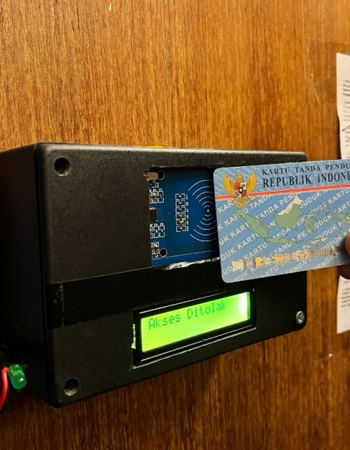
Dokumentasi percobaan akses pintu menggunakan kartu RFID yang tidak terdaftar pada sistem.
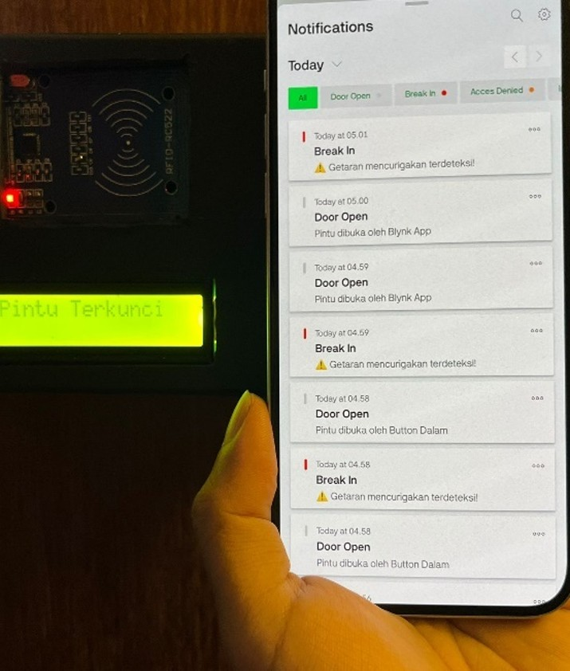
Dokumentasi tampilan notifikasi Blynk sebagai bagian dari pemantauan sistem melalui perangkat mobile.
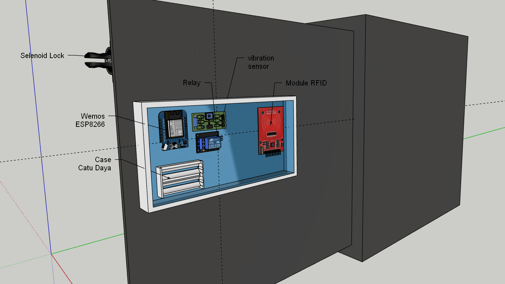
Visualisasi rancangan maket Smart Door Lock menggunakan SketchUp sebagai dokumentasi desain sistem.
09
Smart Door Lock berbasis Wemos D1 Mini (ESP8266), RFID, dan IoT berhasil dirancang dan dibangun untuk mengatur serta mengendalikan akses pintu berdasarkan identitas pengguna.
Berdasarkan hasil pengujian fungsional, sistem dapat membaca kartu RFID dengan akurat, membuka pintu melalui aplikasi Blynk dan push button secara normal, serta mendeteksi gangguan pintu menggunakan sensor getaran sesuai dengan perancangan.
Hasil evaluasi kepuasan pengguna menunjukkan bahwa alat mudah digunakan dan bermanfaat, terutama dalam meningkatkan keamanan dan pengendalian akses pintu. Sistem ini dikembangkan untuk mendukung pengelolaan keamanan ruang administrasi melalui teknologi IoT.
Mengatur akses pintu berdasarkan identitas pengguna melalui pembacaan kartu RFID.
Mendukung kendali pembukaan pintu melalui aplikasi Blynk dan push button.
Mendeteksi gangguan pada pintu menggunakan sensor getaran sebagai bagian dari sistem peringatan.
Evaluasi pengguna menunjukkan alat mudah digunakan dan bermanfaat untuk pengendalian akses pintu.